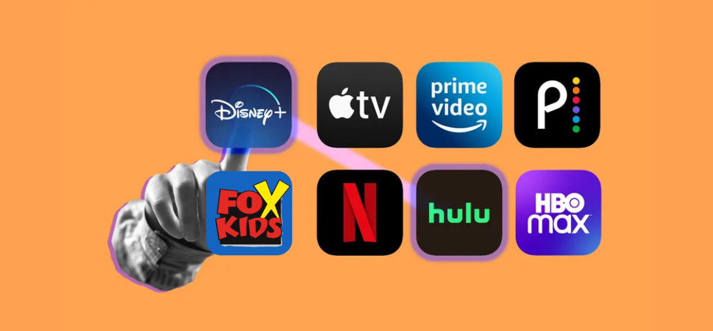
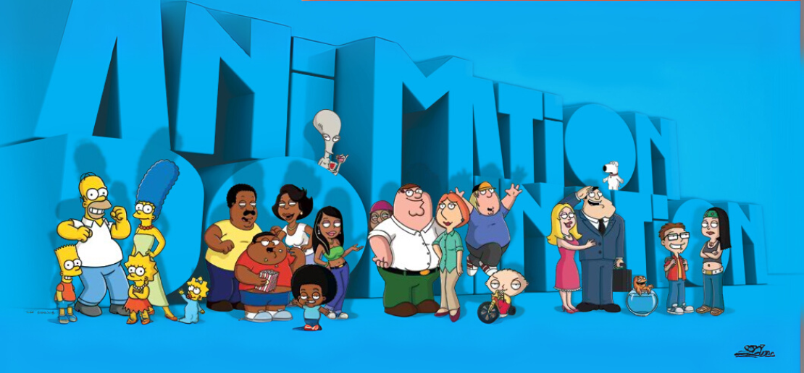
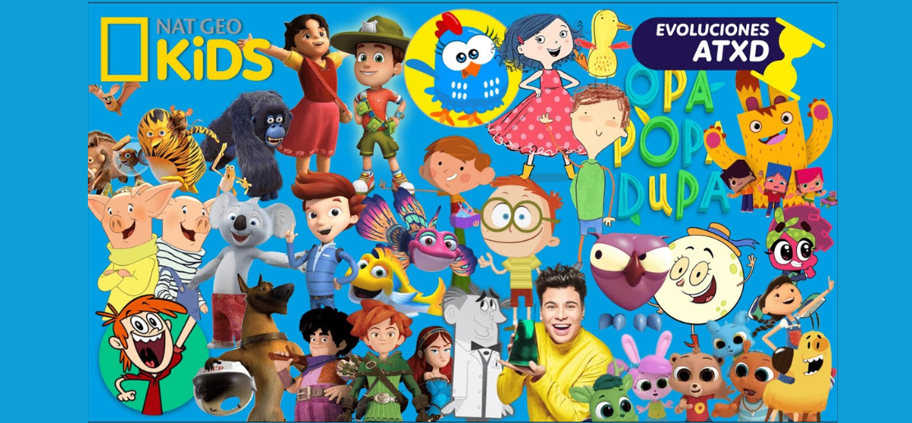
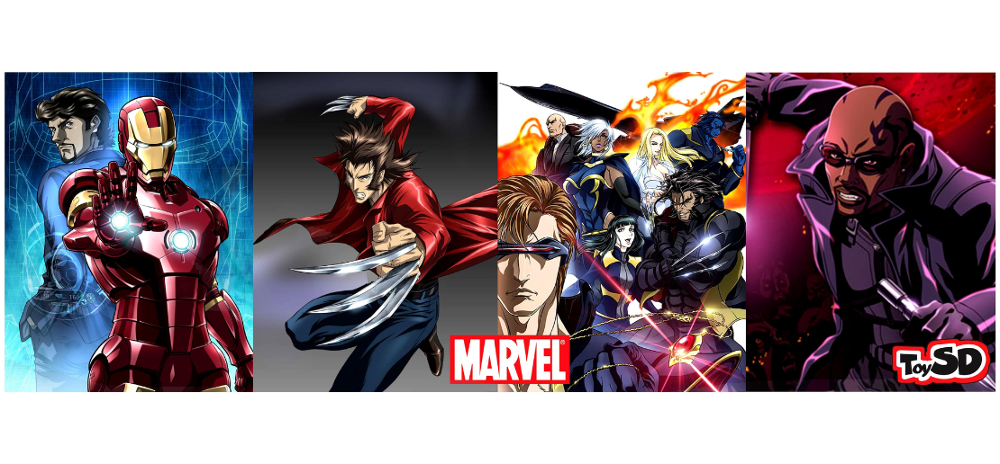
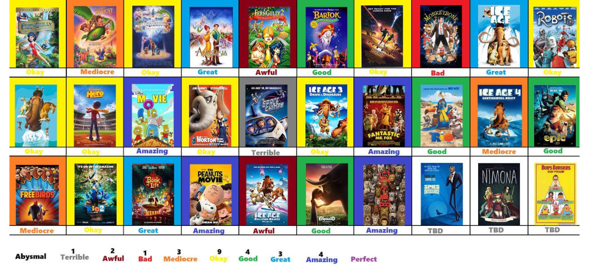
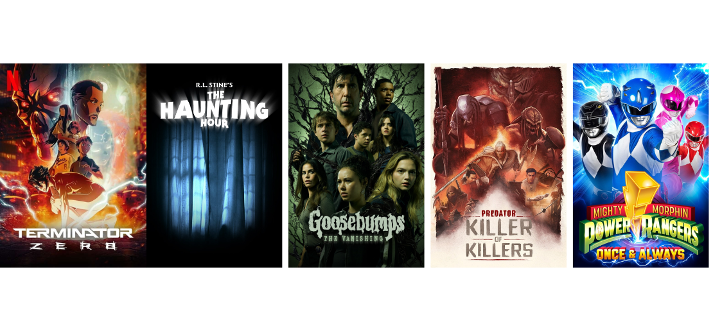

What If Fox Kids Is Still Alive As a Streaming Service?

From Nostalgic Network to Digital Dynamo
Fox Kids wasn’t just a TV block—it was a movement. For kids of the ’90s and early 2000s, it was the gateway to spandex-clad heroes, anime battles, and bizarre animated comedies that somehow all worked together. But what if it never disappeared? What if, instead of fading away post-Disney acquisition, Fox Kids evolved—adapting, expanding, and thriving into the streaming era?
In this alternate timeline, Fox Kids+ emerges in the mid‑2010s as a full-fledged streaming platform. Built on nostalgia but updated for digital natives, it blends its colorful past with bold, exclusive content: Sunday-night animation blocks, forgotten Jetix gems, kid-friendly documentaries, and even anime crossovers that rival Crunchyroll. While Disney+ and Netflix battle for IP supremacy, Fox Kids+ quietly becomes a cult favorite—leaning into its identity as a home for fans who grew up with monsters, gadgets, time travel, and over-the-top villains.
This is the definitive guide to what Fox Kids+ might’ve looked like if the channel survived, rebooted, and ruled once more. From its Fox Play Premium lineup to a Marvel Anime late-night block, here’s how this digital phoenix might have risen.
Fox Play Premium: The Ultimate Content Category

If you logged in on a Sunday night, Fox Play Premium was the place to be. Streaming straight from Fox US to Latin American screens, this curated animation block offered both comfort food and chaos. Think dysfunctional families, musical burgers, and aliens doing taxes.
- The Simpsons (Seasons 26–30): Still sharp, still yellow. These seasons mix sharp social satire with heartfelt family beats—proving there's plenty of life left after 30 years.
- Family Guy (Seasons 13–17): Seth MacFarlane’s cutaway-heavy absurdity ramps up with time travel, Meg jokes, and more talking babies than you'd expect.
- Bob’s Burgers (Seasons 5–9): The Belcher family serve up warmth, weirdness, and weekly songs. One of Fox’s most grounded—and beloved—offerings.
- American Dad! (Seasons 11–15): Roger steals every scene in this surreal spin on suburbia with CIA tech, alien drama, and surprisingly emotional arcs.
All shows are available in both original English audio and Latin American Spanish dub—true to the dual-language tradition of Fox Play LATAM.
Fox Kids+ Section: The Heart of Nostalgia

Buried within the Fox Play app was its real treasure: Fox Kids+. This sub-hub served everything from 2000s anime to educational animal facts, all wrapped in the electric energy of the original network. Jetix, FoxBox, and Nat Geo Kids all lived here in perfect chaos.
Legacy Series (Jetix & FoxBox):
- Power Rangers (Multiple Seasons)
- Yu-Gi-Oh!
- Digimon
- Beyblade
- Totally Spies!
- W.I.T.C.H.
Nat Geo Kids LATAM Originals:
- Furiki Wheels: racing-meets-comedy with a wild boar protagonist.
- Blinky Bill: an Aussie classic revamped for modern kids.
- ¡Raro pero Cierto!: Latin America's version of Weird But True! with interactive trivia.
Preschool to Preteen Picks:
- Ranger Rob
- Dino Dana
- Other edutainment gems rounded out the mix for younger audiences (4–11).
Fox Kids+ hit the sweet spot for families wanting both nostalgia and safe new picks. Plus, every title was downloadable—a blessing on long car rides.
Marvel Anime Block: When Heroes Went Full Otaku

If Toonami had a Marvel cousin, this was it. A late-night block for older fans, Marvel Anime was the edgiest corner of Fox Kids+—showcasing stylized reimaginings of beloved heroes through a Japanese lens. Moody animation, brooding monologues, and epic soundtracks included.
- Iron Man: Rise of Technovore (OVA): Tony Stark battles a techno-terrorist in this sleek standalone anime film.
- Wolverine (2011): More samurai than superhero—Logan goes to Japan in a gritty retelling.
- X-Men (2011): A darker take on the mutant saga, with Phoenix Force drama and angular aesthetics.
- Blade (2011): The vampire hunter gets a Tokyo glow-up.
- Marvel Disk Wars: The Avengers (2014): A kid-friendly, toyetic anime that plays like Pokémon meets Iron Man.
This block would’ve been a premium VOD add-on—pushing the PG-13 edge while remaining a paradise for comic-book-meets-anime fans. Dub and sub options? Of course.
Fox Animation Studios Legacy: Classics, Revived

Once rivals to Disney and DreamWorks, the animation legacy of Fox Animation Studios and Blue Sky finds a second life here. But this isn't just about watching old movies—this is about building new worlds on their backs.
- Anastasia (1997): The fairytale epic returns with a new streaming-exclusive animated reboot, Anastasia: The Lost Princess, a serialized continuation that expands the Romanov lore.
- Titan A.E. (2000): What if Star Wars met Firefly? The cult film comes with a companion show: Titan A.E.: New Earth, charting life after the movie's ending.
- Ice Age, Robots, Ferdinand: Blue Sky's animated hits air in themed weekend marathons, from prehistoric hijinks to robotic futures.
This legacy category adds gravitas to the Fox Kids+ lineup—mixing nostalgia, big-screen polish, and potential new fandoms for a new era.
Future of Fox Kids: The Multiverse of Animation

With Netflix’s Terminator Zero, Hulu’s Predator: Killer of Killers, and Disney+’s reboot of Goosebumps making waves in 2025, the potential for Fox’s mature IPs in animation feels limitless. Imagine adult-targeted animated reboots of James Cameron’s Avatar, Battle Angel Alita, or even a cerebral animated anthology based on Planet of the Apes. In a streaming world hungry for high-concept, stylized content, these legacy properties hold untapped power to expand across formats and generations.
Fox Kids+ may live only in our imaginations, but its blueprint feels more relevant than ever. In a landscape dominated by franchises, nostalgia, and streaming wars, the spirit of Fox Kids—bold, chaotic, and cross-cultural—could thrive like never before. If it had survived, it might’ve become more than just a memory. It could’ve been a multiverse of childhoods reborn, one dub, rerun, and reboot at a time.
← Volver a artículos